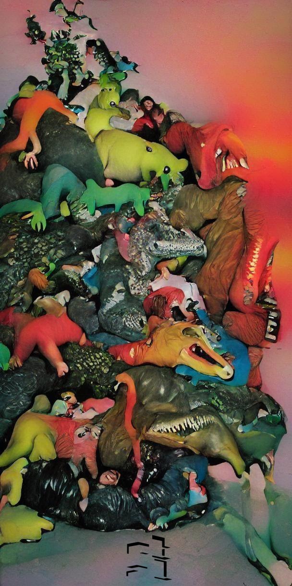

Facundo Grehan
Verano de 2022

Grehan, Facundo
Buscatierra / 1a ed.- Ciudad Interdimensional de Buenos Aires: etal, 2022.
2022 - etal. El texto de esta publicación y esta edición se liberan bajo la Licencia de Producción de Pares